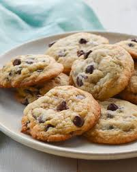

Chewy Choclate Chip Cookies!

Chocolate chip cookies are a baking staple! Everyone knows them, everyone loves them, and now, you'll know how to make them!
A family recipe made by my grandma, these cookies are soft and chewy on the inside, while still being crispy on the outside. The melty chocolate chips and warm cookie pairs perfectly with a nice glass of cold milk!
Ingredients:
- Butter
- White and brown Sugar
- Eggs
- Vanilla
- Baking Soda
- Water
- Salt
- Flour
- Chocolate Chips
Instructions
- Beat together butter and sugar, then the eggs and Vanilla
- Dissolve baking soda in hot water, then add to mixture
- Stir in flour and chocolate chips
- Add dough to baking sheet in small balls
- Bake at 350 degrees until edges are golden brown
- Enjoy your delicious cookies!